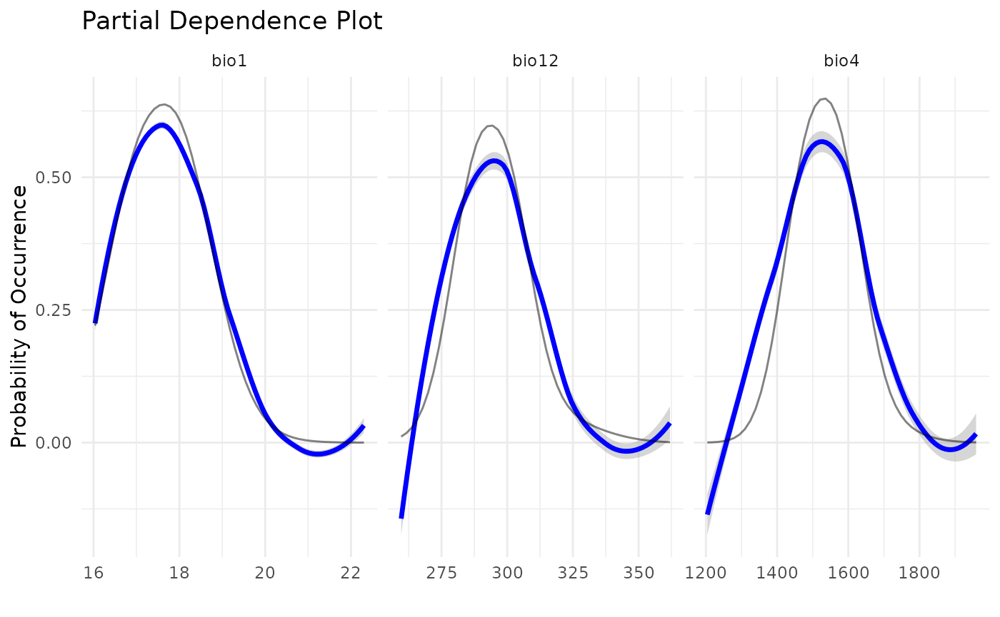
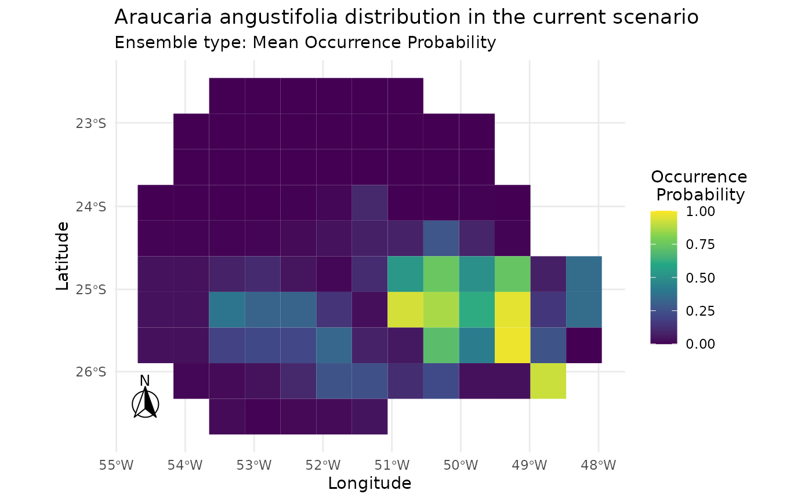

Introduction
The caretSDM package leverages the robust
caret package as its core engine for Species Distribution
Modeling (SDM). This integration means that caretSDM is not
limited to its pre-configured algorithms. Any modeling algorithm that
can be used with caret’s train function can
also be seamlessly integrated into the caretSDM
workflow.
This vignette will guide you through the process of adding a new,
custom algorithm to caretSDM. We will use the
Mahalanobis Distance model, a classic algorithm for
presence-only SDMs, as our working example. The process involves
creating a list object that contains all the necessary components for
caret to train, tune, and predict from the model.
For a deeper dive into creating custom models for caret,
we highly recommend consulting the official caret
documentation: Using
Your Own Model in train.
First, let’s load the caretSDM library to set up our
environment.
The Custom Model Structure
To add a new algorithm, you need to create a list in R that contains
specific named elements. The caret package uses this list
to understand how to handle your model. Here are the key components of
this list, which we will define for our Mahalanobis Distance
example.
The Components of the List
The core of a custom model is a list that we’ll call
mahal.dist. This list bundles together everything
caret needs.
-
label: A simple character string for the model’s name. -
library: A character vector listing the R packages required to run the model. For Mahalanobis Distance, we need thedismopackage. -
type: A character vector indicating the type of prediction problem. For SDM, this will typically be"Classification". -
parameters: A data frame that defines the model’s tuning parameters. Each row represents a parameter and should include columns for itsparametername, itsclass(e.g., “numeric”, “logical”), and a descriptivelabel. -
grid: A function that generates a data frame of tuning parameter combinations forcaretto test. -
fit: The main function that trains your model. It takes the predictor data (x), the response variable (y), and other arguments, and returns a fitted model object. -
predict: A function that uses the fitted model fromfitto make predictions on new data. -
prob: A function that generates class probabilities (e.g., probability of presence and pseudo-absence) for new data. This is crucial for evaluating models using metrics like AUC/ROC. -
levels: A function that returns the class levels. ForcaretSDM, this will be"presence"and"pseudoabsence".
You can find these informations for any method by substituting the
“METHOD” below for the desired algorithm name (see also the
algorithms object):
caret::getModelInfo("METHOD", regex = FALSE)[[1]]See how the list is built for nayve_bayes algorithm:
caret::getModelInfo("naive_bayes", regex = FALSE)[[1]]
#> $label
#> [1] "Naive Bayes"
#>
#> $library
#> [1] "naivebayes"
#>
#> $loop
#> NULL
#>
#> $type
#> [1] "Classification"
#>
#> $parameters
#> parameter class label
#> 1 laplace numeric Laplace Correction
#> 2 usekernel logical Distribution Type
#> 3 adjust numeric Bandwidth Adjustment
#>
#> $grid
#> function (x, y, len = NULL, search = "grid")
#> expand.grid(usekernel = c(TRUE, FALSE), laplace = 0, adjust = 1)
#>
#> $fit
#> function (x, y, wts, param, lev, last, classProbs, ...)
#> {
#> if (param$usekernel) {
#> out <- naivebayes::naive_bayes(x, y, usekernel = TRUE,
#> laplace = param$laplace, adjust = param$adjust, ...)
#> }
#> else out <- naivebayes::naive_bayes(x, y, usekernel = FALSE,
#> laplace = param$laplace, ...)
#> out
#> }
#>
#> $predict
#> function (modelFit, newdata, submodels = NULL)
#> {
#> if (!is.data.frame(newdata))
#> newdata <- as.data.frame(newdata, stringsAsFactors = TRUE)
#> predict(modelFit, newdata)
#> }
#>
#> $prob
#> function (modelFit, newdata, submodels = NULL)
#> {
#> if (!is.data.frame(newdata))
#> newdata <- as.data.frame(newdata, stringsAsFactors = TRUE)
#> as.data.frame(predict(modelFit, newdata, type = "prob"),
#> stringsAsFactors = TRUE)
#> }
#>
#> $predictors
#> function (x, ...)
#> if (hasTerms(x)) predictors(x$terms) else names(x$tables)
#>
#> $tags
#> [1] "Bayesian Model"
#>
#> $levels
#> function (x)
#> x$levels
#>
#> $sort
#> function (x)
#> x[order(x[, 1]), ]Naturally, some elements are particular to each method, but some elements are common to every algorithm implemented. Let’s see how these components come together in our example.
Example 1: An algorithm from a package
Here is the complete code for creating the algo list for
the Mahalanobis Distance using the dismo package. This
structure can be changed to include new algorithms into caretSDM.
mahal.dismo <- list(
label = "Mahalanobis Distance",
library = "dismo",
loop = NULL,
type = c("Classification", "Regression"),
levels = function(x) c("presence", "pseudoabsence"),
parameters = data.frame(
parameter = c("abs"),
class = c("logical"),
label = c("Absolute absence")
),
grid = function(x, y, len = NULL, search = "grid") {
# We define a simple grid that will test both TRUE and FALSE for the 'abs' parameter.
if (search == "grid") {
out <- expand.grid(abs = c(TRUE, FALSE))
} else {
out <- expand.grid(abs = c(TRUE, FALSE))
}
return(out)
},
fit = function(x, y, wts, param, lev, last, classProbs, ...) {
# The 'fit' function uses 'dismo::mahal'.
# It's trained only on presence data.
model <- dismo::mahal(x = x[y == "presence", ])
# We return the model and the tuning parameter value.
result <- list(model = model, abs = param$abs)
return(result)
},
predict = function(modelFit, newdata, preProc = NULL, submodels = NULL) {
# 'predict' generates predictions for new data.
pred <- predict(modelFit$model, newdata)
# The output is converted to probabilities for both classes.
pred <- data.frame(presence = pred, pseudoabsence = 1 - pred)
# The 'abs' parameter determines the binarization type.
if (modelFit$abs) {
pred <- as.factor(ifelse(pred$presence > 0, "presence", "pseudoabsence"))
} else {
pred <- as.factor(colnames(pred)[apply(pred, 1, which.max)])
}
return(pred)
},
prob = function(modelFit, newdata, preProc = NULL, submodels = NULL) {
# 'prob' calculates the class probabilities.
prob <- predict(modelFit$model, newdata)
# It must return a data frame with column names matching the class levels.
prob <- data.frame(presence = prob, pseudoabsence = 1 - prob)
return(prob)
},
predictors = function(x, ...) {
names(x$model@centroid)
},
varImp = NULL,
tags = c("Distance")
)Example 2: A custom made algorithm
Alternatively, the user can built its own algorithm and implement it through the same method. Here I show the code for a custom Mahalanobis Distance.
# Define a custom Mahalanobis model
mahal.custom <- list(
label = "Mahalanobis Distance Classifier",
library = NULL,
type = "Classification",
parameters = data.frame(
parameter = c("abs"),
class = c("logical"),
label = c("Absolute Binarization")
),
grid = function(x, y, len = NULL, search = "grid") {
# We define a simple grid that will test both TRUE and FALSE
# for the 'abs' parameter. Here, search can be anything that
# the output is the same. But in other implementations the user
# may want to change when search is not "grid".
if (search == "grid") {
out <- expand.grid(abs = c(TRUE, FALSE))
} else {
out <- expand.grid(abs = c(TRUE, FALSE))
}
return(out)
},
fit = function(x, y, wts, param, lev, last, classProbs, ...) {
# The 'fit' function is trained only on presence data.
# It calculates and stores the mean vector and inverse covariance matrix.
presence_data <- x[y == "presence", , drop = FALSE]
if (nrow(presence_data) < 2) {
stop("Not enough 'presence' data points to calculate covariance.")
}
# Calculate model parameters
center_vec <- colMeans(presence_data, na.rm = TRUE)
inv_cov_matrix <- solve(cov(presence_data))
# The model object here is just a list of parameters.
result <- list(
center = center_vec,
inv_cov = inv_cov_matrix,
df = ncol(x), # Correction demonstrated by Etherington 2019.
abs = param$abs,
levels = lev # Retain data information dor consistency.
)
return(result)
},
# Prediction function (must match caret's expected signature)
predict = function(modelFit, newdata, preProc = NULL, submodels = NULL) {
# 'predict' generates class labels based on the probabilities.
# 1. Get the probabilities by calling the 'prob' function.
probs <- mahal.custom$prob(modelFit, newdata)
# 2. The 'abs' parameter determines the binarization type.
if (modelFit$abs) {
# For "Absolute Binarization", we threshold the p-value.
# A common choice is alpha = 0.05. If p-value >= 0.05, the point is
# considered within the "presence" environment.
pred <- ifelse(probs[, modelFit$levels[1]] >= 0.05,
modelFit$levels[1], # presence
modelFit$levels[2]) # pseudoabsence
} else {
# Standard method: assign the class with the highest probability.
pred <- colnames(probs)[apply(probs, 1, which.max)]
}
# 3. Return a factor with the correct levels.
pred <- factor(pred, levels = modelFit$levels)
return(pred)
},
predictors = function(x, ...) {
# This correctly extracts predictor names from the fitted model.
names(x$center)
},
# Optional: Specify if probabilities are supported
prob = function(modelFit, newdata, preProc = NULL, submodels = NULL) {
# 'prob' calculates class probabilities using the fitted model.
# 1. Calculate the squared Mahalanobis distance (D^2) for newdata.
d2 <- stats::mahalanobis(x = newdata,
center = modelFit$center,
cov = modelFit$inv_cov,
inverted = TRUE) # Use inverted = TRUE for efficiency ######################
# 2. Convert distance to a p-value using the chi-squared distribution.
# This p-value can be interpreted as the probability of "presence".
p_presence <- 1 - pchisq(q = d2, df = modelFit$df)
# 3. The output is a data frame of probabilities for both classes.
prob_df <- data.frame(
presence = p_presence,
pseudoabsence = 1 - p_presence
)
colnames(prob_df) <- modelFit$levels # Ensure column names match levels
return(prob_df)
}
)Integrating the New Algorithm into caretSDM
With our mahal.custom list defined, we can now use it
directly with the train_sdm function. The process is the
same as for any built-in algorithm, but instead of providing the
algorithm’s name as a string (e.g., "rf"), we provide our
mahal.custom list object.
Let’s walk through a minimal caretSDM workflow to see
this in action.
1. Prepare a Minimal input_sdm Object
We’ll use data already included in the caretSDM package
to create a simple input_sdm object. This simulates the
pre-processing steps of a typical SDM analysis.
# Create an sdm_area object
sa <- sdm_area(parana,
cell_size = 50000, # Using a coarse resolution for speed
crs = 6933)
#> ! Making grid over study area is an expensive task. Please, be patient!
#> ℹ Using GDAL to make the grid and resample the variables.
# Add predictors to the study area
sa <- add_predictors(sa, bioc)
#> ! Making grid over the study area is an expensive task. Please, be patient!
#> ℹ Using GDAL to make the grid and resample the variables.
# Format occurrences
oc <- occurrences_sdm(occ, crs = 6933)
oc <- join_area(oc, sa)
# Create the final input_sdm object
i <- input_sdm(oc, sa)
# Generate pseudoabsences
i <- pseudoabsences(i,
method = "bioclim",
n_set = 3)2. Train the Model using train_sdm
Now, we will call train_sdm and pass our custom
mahal.dist list to the algo argument. We also
need to define our training control parameters using
caret::trainControl.
# Define training controls
ctrl_sdm <- caret::trainControl(method = "cv",
number = 3,
classProbs = TRUE,
summaryFunction = summary_sdm,
savePredictions = "final")
# Train the model using our custom algorithm
# Note that 'algo' is now our list object instead of a string
i <- train_sdm(i,
algo = mahal.custom,
variables_selected = c("bio1", "bio4", "bio12"), # Using only two variables for simplicity
ctrl = ctrl_sdm)
#> Warning in auc.roc(roc_obj, partial.auc = c(1, 0.9), partial.auc.focus =
#> "specificity", : Partial AUC correction not defined for ROC curves below the
#> diagonal.
#> Loading required package: ggplot2
#> Loading required package: lattice
#>
#> Attaching package: 'caret'
#> The following object is masked from 'package:caretSDM':
#>
#> predictors
#> Warning in auc.roc(roc_obj, partial.auc = c(1, 0.9), partial.auc.focus =
#> "specificity", : Partial AUC correction not defined for ROC curves below the
#> diagonal.
#> Warning in auc.roc(roc_obj, partial.auc = c(1, 0.9), partial.auc.focus =
#> "specificity", : Partial AUC correction not defined for ROC curves below the
#> diagonal.
#> Warning in auc.roc(roc_obj, partial.auc = c(1, 0.9), partial.auc.focus =
#> "specificity", : Partial AUC correction not defined for ROC curves below the
#> diagonal.
#> Warning in auc.roc(roc_obj, partial.auc = c(1, 0.9), partial.auc.focus =
#> "specificity", : Partial AUC correction not defined for ROC curves below the
#> diagonal.
#> Warning in auc.roc(roc_obj, partial.auc = c(1, 0.9), partial.auc.focus =
#> "specificity", : Partial AUC correction not defined for ROC curves below the
#> diagonal.
#> Warning in auc.roc(roc_obj, partial.auc = c(1, 0.9), partial.auc.focus =
#> "specificity", : Partial AUC correction not defined for ROC curves below the
#> diagonal.
#> Warning in nominalTrainWorkflow(x = x, y = y, wts = weights, info = trainInfo,
#> : There were missing values in resampled performance measures.
#> Warning in auc.roc(roc_obj, partial.auc = c(1, 0.9), partial.auc.focus =
#> "specificity", : Partial AUC correction not defined for ROC curves below the
#> diagonal.
#> Warning in auc.roc(roc_obj, partial.auc = c(1, 0.9), partial.auc.focus =
#> "specificity", : Partial AUC correction not defined for ROC curves below the
#> diagonal.
#> Warning in auc.roc(roc_obj, partial.auc = c(1, 0.9), partial.auc.focus =
#> "specificity", : Partial AUC correction not defined for ROC curves below the
#> diagonal.
#> Warning in auc.roc(roc_obj, partial.auc = c(1, 0.9), partial.auc.focus =
#> "specificity", : Partial AUC correction not defined for ROC curves below the
#> diagonal.
#> Warning in auc.roc(roc_obj, partial.auc = c(1, 0.9), partial.auc.focus =
#> "specificity", : Partial AUC correction not defined for ROC curves below the
#> diagonal.
#> Warning in auc.roc(roc_obj, partial.auc = c(1, 0.9), partial.auc.focus =
#> "specificity", : Partial AUC correction not defined for ROC curves below the
#> diagonal.
#> Warning in nominalTrainWorkflow(x = x, y = y, wts = weights, info = trainInfo,
#> : There were missing values in resampled performance measures.
#> Warning in auc.roc(roc_obj, partial.auc = c(1, 0.9), partial.auc.focus =
#> "specificity", : Partial AUC correction not defined for ROC curves below the
#> diagonal.
#> Warning in auc.roc(roc_obj, partial.auc = c(1, 0.9), partial.auc.focus =
#> "specificity", : Partial AUC correction not defined for ROC curves below the
#> diagonal.
#> Warning in auc.roc(roc_obj, partial.auc = c(1, 0.9), partial.auc.focus =
#> "specificity", : Partial AUC correction not defined for ROC curves below the
#> diagonal.
#> Warning in auc.roc(roc_obj, partial.auc = c(1, 0.9), partial.auc.focus =
#> "specificity", : Partial AUC correction not defined for ROC curves below the
#> diagonal.
#> Warning in auc.roc(roc_obj, partial.auc = c(1, 0.9), partial.auc.focus =
#> "specificity", : Partial AUC correction not defined for ROC curves below the
#> diagonal.
#> Warning in auc.roc(roc_obj, partial.auc = c(1, 0.9), partial.auc.focus =
#> "specificity", : Partial AUC correction not defined for ROC curves below the
#> diagonal.
#> Warning in nominalTrainWorkflow(x = x, y = y, wts = weights, info = trainInfo,
#> : There were missing values in resampled performance measures.Let’s check the output. The printout shows that “Mahalanobis Distance” was successfully trained and evaluated.
i
#> caretSDM
#> ...............................
#> Class : input_sdm
#> -------- Occurrences --------
#> Species Names : Araucaria angustifolia
#> Number of presences : 420
#> Pseudoabsence methods :
#> Method to obtain PAs : bioclim
#> Number of PA sets : 3
#> Number of PAs in each set : 420
#> -------- Predictors ---------
#> Number of Predictors : 7
#> Predictors Names : GID0, CODIGOIB1, NOMEUF2, SIGLAUF3, bio1, bio4, bio12
#> ----------- Models ----------
#> Algorithms Names : mahal.custom
#> Variables Names : bio1 bio4 bio12
#> Model Validation :
#> Method : cv
#> Number : 3
#> Metrics :
#> $`Araucaria angustifolia`
#> algo ROC TSS Sensitivity Specificity
#> 1 mahal.custom 0.9886724 0.8060847 0.8244444 1Note that the algorithm name will be set as the name of the object
passed to algo:
algorithms_used(i)
#> [1] "mahal.custom"We can also inspect the model’s performance metrics.
mean_validation_metrics(i)
#> $`Araucaria angustifolia`
#> # A tibble: 1 × 59
#> algo ROC TSS Sensitivity Specificity `Pos Pred Value` `Neg Pred Value`
#> <chr> <dbl> <dbl> <dbl> <dbl> <dbl> <dbl>
#> 1 mahal.c… 0.989 0.806 0.824 1 1 0.318
#> # ℹ 52 more variables: Precision <dbl>, Recall <dbl>, F1 <dbl>,
#> # Prevalence <dbl>, `Detection Rate` <dbl>, `Detection Prevalence` <dbl>,
#> # `Balanced Accuracy` <dbl>, Accuracy <dbl>, Kappa <dbl>,
#> # AccuracyLower <dbl>, AccuracyUpper <dbl>, AccuracyNull <dbl>,
#> # AccuracyPValue <dbl>, McnemarPValue <dbl>, Positive <dbl>, Negative <dbl>,
#> # `True Positive` <dbl>, `False Positive` <dbl>, `True Negative` <dbl>,
#> # `False Negative` <dbl>, CBI <dbl>, pAUC <dbl>, Omission_10pct <dbl>, …A final plot that can be useful is the Partial Dependence Plot
pdp_sdm(i)
#> `geom_smooth()` using method = 'loess' and formula = 'y ~ x'
2. Comparing both results
To compare the output of both algorithms implemented we need to first build models using the mahal.dismo method.
# Create a new input_sdm object
i2 <- input_sdm(oc, sa) |>
pseudoabsences(method = "bioclim",
n_set = 3) |>
train_sdm(algo = mahal.dismo,
variables_selected = c("bio1", "bio4", "bio12"), # Using only two variables for simplicity
ctrl = ctrl_sdm)
#> Warning in auc.roc(roc_obj, partial.auc = c(1, 0.9), partial.auc.focus =
#> "specificity", : Partial AUC correction not defined for ROC curves below the
#> diagonal.
#> Warning in auc.roc(roc_obj, partial.auc = c(1, 0.9), partial.auc.focus =
#> "specificity", : Partial AUC correction not defined for ROC curves below the
#> diagonal.
#> Warning in auc.roc(roc_obj, partial.auc = c(1, 0.9), partial.auc.focus =
#> "specificity", : Partial AUC correction not defined for ROC curves below the
#> diagonal.
#> Warning in auc.roc(roc_obj, partial.auc = c(1, 0.9), partial.auc.focus =
#> "specificity", : Partial AUC correction not defined for ROC curves below the
#> diagonal.
#> Warning in auc.roc(roc_obj, partial.auc = c(1, 0.9), partial.auc.focus =
#> "specificity", : Partial AUC correction not defined for ROC curves below the
#> diagonal.
#> Warning in auc.roc(roc_obj, partial.auc = c(1, 0.9), partial.auc.focus =
#> "specificity", : Partial AUC correction not defined for ROC curves below the
#> diagonal.
#> Warning in auc.roc(roc_obj, partial.auc = c(1, 0.9), partial.auc.focus =
#> "specificity", : Partial AUC correction not defined for ROC curves below the
#> diagonal.
#> Warning in nominalTrainWorkflow(x = x, y = y, wts = weights, info = trainInfo,
#> : There were missing values in resampled performance measures.
#> Warning in auc.roc(roc_obj, partial.auc = c(1, 0.9), partial.auc.focus =
#> "specificity", : Partial AUC correction not defined for ROC curves below the
#> diagonal.
#> Warning in auc.roc(roc_obj, partial.auc = c(1, 0.9), partial.auc.focus =
#> "specificity", : Partial AUC correction not defined for ROC curves below the
#> diagonal.
#> Warning in auc.roc(roc_obj, partial.auc = c(1, 0.9), partial.auc.focus =
#> "specificity", : Partial AUC correction not defined for ROC curves below the
#> diagonal.
#> Warning in auc.roc(roc_obj, partial.auc = c(1, 0.9), partial.auc.focus =
#> "specificity", : Partial AUC correction not defined for ROC curves below the
#> diagonal.
#> Warning in auc.roc(roc_obj, partial.auc = c(1, 0.9), partial.auc.focus =
#> "specificity", : Partial AUC correction not defined for ROC curves below the
#> diagonal.
#> Warning in auc.roc(roc_obj, partial.auc = c(1, 0.9), partial.auc.focus =
#> "specificity", : Partial AUC correction not defined for ROC curves below the
#> diagonal.
#> Warning in nominalTrainWorkflow(x = x, y = y, wts = weights, info = trainInfo,
#> : There were missing values in resampled performance measures.
#> Warning in auc.roc(roc_obj, partial.auc = c(1, 0.9), partial.auc.focus =
#> "specificity", : Partial AUC correction not defined for ROC curves below the
#> diagonal.
#> Warning in auc.roc(roc_obj, partial.auc = c(1, 0.9), partial.auc.focus =
#> "specificity", : Partial AUC correction not defined for ROC curves below the
#> diagonal.
#> Warning in auc.roc(roc_obj, partial.auc = c(1, 0.9), partial.auc.focus =
#> "specificity", : Partial AUC correction not defined for ROC curves below the
#> diagonal.
#> Warning in auc.roc(roc_obj, partial.auc = c(1, 0.9), partial.auc.focus =
#> "specificity", : Partial AUC correction not defined for ROC curves below the
#> diagonal.
#> Warning in auc.roc(roc_obj, partial.auc = c(1, 0.9), partial.auc.focus =
#> "specificity", : Partial AUC correction not defined for ROC curves below the
#> diagonal.
#> Warning in auc.roc(roc_obj, partial.auc = c(1, 0.9), partial.auc.focus =
#> "specificity", : Partial AUC correction not defined for ROC curves below the
#> diagonal.
#> Warning in auc.roc(roc_obj, partial.auc = c(1, 0.9), partial.auc.focus =
#> "specificity", : Partial AUC correction not defined for ROC curves below the
#> diagonal.
#> Warning in nominalTrainWorkflow(x = x, y = y, wts = weights, info = trainInfo,
#> : There were missing values in resampled performance measures.
i2
#> caretSDM
#> ...............................
#> Class : input_sdm
#> -------- Occurrences --------
#> Species Names : Araucaria angustifolia
#> Number of presences : 420
#> Pseudoabsence methods :
#> Method to obtain PAs : bioclim
#> Number of PA sets : 3
#> Number of PAs in each set : 420
#> -------- Predictors ---------
#> Number of Predictors : 7
#> Predictors Names : GID0, CODIGOIB1, NOMEUF2, SIGLAUF3, bio1, bio4, bio12
#> ----------- Models ----------
#> Algorithms Names : mahal.dismo
#> Variables Names : bio1 bio4 bio12
#> Model Validation :
#> Method : cv
#> Number : 3
#> Metrics :
#> $`Araucaria angustifolia`
#> algo ROC TSS Sensitivity Specificity
#> 1 custom 0.9913901 0.8488215 0.9794444 0.8821111Plotting the result of mahal.dismo.
i2 |> add_scenarios() |> predict_sdm() |> plot_predictions()
#> [1] "Projecting: 1/1"
#> [1] "Ensembling..."
#> [1] "current"
#> [1] "Araucaria angustifolia"
Plotting the result of mahal.custom.
i |> add_scenarios() |> predict_sdm() |> plot_predictions()
#> [1] "Projecting: 1/1"
#> [1] "Ensembling..."
#> [1] "current"
#> [1] "Araucaria angustifolia"
Conclusion
The caretSDM package is designed to be flexible and
extensible. By leveraging the power of caret, you can
easily integrate virtually any modeling algorithm into your Species
Distribution Modeling workflow. The key is to create a well-defined list
that tells caret how to fit,
predict, and tune your model. This opens the
door to using state-of-the-art algorithms or custom-built models
tailored to your specific research questions, all within the structured
and reproducible environment of caretSDM.